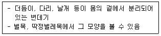
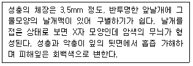
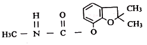
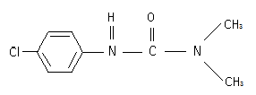

식물보호산업기사 (2012-09-15 기출문제)
1과목: 식물병리학
1. Bacteriophage라는 것은?
- 세균의 바이러스
- 곰팡이의 기생세균
- 세균병 방제약
- 바이러스를 제거하는 세균
(정답률: 84%)

2. 고온 다습한 여름 날씨에 많이 발생하는 병은?
- 사과 탄저병
- 배추 노균병
- 배나무 검은별무늬병
- 포도 새눈무늬병
(정답률: 77%)
3. 병명과 매개충이 바르게 연결된 것은?
- 벼 줄무늬잎마름병 - 벼멸구
- 벼 오갈병 - 애멸구
- 수목 줄기마름병 - 매미
- 오이류 풋마름병 - 오이잎벌레
(정답률: 61%)
4. 자낭균문에 속하지 않는 병원균은?
- Taphrina pruni
- Pseudoperonospora cubensis
- Erysiphe graminis
- Elsino araliae
(정답률: 72%)
5. 수도 줄무늬잎마름병의 방제법은 어느 것인가?
- 종자소독
- 토양소독
- 매갠곤충구제
- 냉수온탕침법
(정답률: 69%)
6. 토마토 풋마름병을 일으키는 병원체는?
- 세균
- 선충
- 진균(곰팡이)
- 바이러스
(정답률: 77%)
7. 다음의 주요 식물병원 균류의 포자 가운데 무성포자는?
- 담자포자
- 자낭포자
- 유주포자(유주자)
- 접합포자
(정답률: 75%)
8. Pythium debaryanum 에 의해 발생하는 모잘록병의 특성으로 맞지 않는 것은?
- 온실, 묘상, 노지에서 발생한다.
- 주로 노화된 식물에 발생한다.
- 병징을 ‘Damping Off'라 한다.
- 병원균은 난기와 옹기를 형성한다.
(정답률: 74%)
9. 다음 중 감자역병균에 대한 설명으로 옳지 않은 것은?
- 감자역병은 감자의 잎, 줄기, 괴경에 발생한다.
- 감자역병균은 무성생식만을 한다.
- 감자역병균의 유주자는 15℃이하에서 방출된다.
- 감자역병균은 A1, A2 교배형이 있다.
(정답률: 83%)
10. 식물병의 방제방법으로 옳지 않은 것은?
- 벼 도열병의 방제를 위해 종자를 소독한다.
- 사과 부란병 방제를 위해서는 이병가지의 전정과 보호제를 처리한다.
- 벼, 보리 등 주곡작물은 무병종자를 파종하는 것이 중요하다.
- 잣나무 털녹병의 방제를 위해 중간기주인 노간주나무를 제거한다.
(정답률: 82%)
11. 보르도액의 조성은?
- 산화철과 염화나트륨
- 황산구리와 생석회
- 산화철과 생선회
- 황산구리와 염화나트륨
(정답률: 88%)
12. 식물에 병적인 현상을 일으킬수 있는 요인은 비생물성과 생물성으로 구분한다. 다음 중 분류가 다른 하나는?
- 서리
- 염류집적
- 바이러스
- 오존
(정답률: 84%)
13. 다음 중 배추 무사마귀병의 발생이 가장 심한 토양 pH는?
- 4.7
- 6.7
- 8.7
- 12.7
(정답률: 86%)
14. 소나무 재선충의 방제법에 대한 설명으로 옳지 않은 것은?
- 감염목은 메탐소듐 액제로 밀폐후 원액 처리한다.
- 에마멕틴벤조에이트 유제를 수간에 직접 주입하여 방제한다.
- 감염목은 톱밥 또는 칩제조기를 이용하여 5.0cm 이하의 크기로 분쇄한다.
- 예방법으로 살선충제를 나무줄기에 주입한다.
(정답률: 67%)
15. 어떤 병원체가 식물 체내에 침입되어 병징이 나타나기까지의 기간은?
- 잠복기
- 사멸기
- 유도기
- 생식기
(정답률: 92%)
16. 겨울포자를 형성하는 녹병균의 분류학적 위치는?
- 접합균
- 자낭균
- 담자균
- 불완전균
(정답률: 61%)
17. 병원균의 침입으로 수피가 쉽게 벗겨지며 알코올 냄새가 발생하는 것이 특징적인 병은?
- 사과나무 화상병
- 배나무 붉은별무늬병
- 사과나무 부란병
- 사과나무 탄저병
(정답률: 86%)
18. 다음 중 주로 벼 도열병 발생을 조장하는 요인은?
- 칼륨비료 과용
- 인산비료 과용
- 규산비료 과용
- 질소비료 과용
(정답률: 83%)
19. 종자소독으로 방제할 수 있는 벼의 병해는?
- 줄무늬잎마름병
- 흰잎마름병
- 좀균핵병
- 키다리병
(정답률: 84%)
20. 다음 진단에 관한 설명 중 옳지 않은 것은?
- 바이러스병의 진단에는 표징의 관찰이 자주 이용된다.
- 습실법(濕室法)은 발병 초기의 병 진단에 자주 이용된다.
- 오이 덩굴쪼김병은 도관조직의 갈변여부로 진단할 수 있다.
- 세균병의 진단에는 유출검사법(Ooze Test)이 이용된다.
(정답률: 81%)
2과목: 농림해충학
21. 장수풍뎅이가 속하는 목(目)의 이름은?
- 나비목
- 날도래목
- 딱정벌레목
- 파리목
(정답률: 86%)
22. 다음 중 천적으로 이용되는 생물과 거리가 먼 것은?
- 포식충
- 기생벌
- 병원균
- 불임충
(정답률: 68%)
23. 벼 해충의 월동에 관한 설명 중 틀린 것은?
- 벼멸구는 우리나라에서 월동이 안된다.
- 벼줄기굴파리는 뚝새풀에서 어린 유충으로 월동한다.
- 벼잎벌레는 땅 속에서 유충으로 월동한다.
- 이화명나방은 볏짚이나 벼그루터기 속에서 노숙유충으로 월동한다.
(정답률: 54%)
24. 뇌와 배신경줄로 이루어진 곤충 신경계는?
- 중추신경계
- 말초신경계
- 앞창자신경계
- 식도밑신경구
(정답률: 78%)
25. 살충제를 이용하여 해충을 방제하는 화학적 방제의 특징이 아닌 것은?
- 인축이나 야생동물에 미치는 영향이 비교적 적다.
- 저항성 해충이 나타날 가능성이 있다.
- 효과가 빨라서 짧은 기간 내에 방제가 가능하다.
- 천적류의 밀도를 감소시킨다.
(정답률: 81%)
26. 곤충의 피부 중 제일 바깥층에 속하는 것은?
- 진피층(Epidermis Layer)
- 표피소층(Cuticulin Layer)
- 외원표피(Exocuticle)
- 시멘트층(Cement Layer)
(정답률: 77%)
27. 다음 중 거미류에서 멸구류나 매미층류의 포식성이 가장 뛰어난 종은?
- 턱거미
- 황산적거미
- 황갈애접시거미
- 주홍거미
(정답률: 62%)
28. 다음 설명은 어떤 종류의 번데기인가?

- 나용(裸踊)
- 피용(被踊)
- 대용(帶踊)
- 위용(圍踊)
(정답률: 64%)
29. 성충은 1.5mm로서 2쌍의 백색 날개를 가지고 있다. 성충과 약충이 잎 뒷면에서 군서생활을 하며 흡즙가해하기 때문에 시설재배에서 피해가 크다. 어떤 해충인가?
- 온실가루이
- 파밤나방
- 아메리카잎굴파리
- 담배거세미나방
(정답률: 74%)
30. 다음 항공방제에 대한 설명으로 가장 부적합한 것은?
- 항공방제의 기본은 일반 약제를 고농도 희석하여 미량 살포하는 것을 원칙으로 한다.
- 항공방제용 약제는 대부분 고독성으로 일정 교육을 이수한 사람만이 취급할 수 있다.
- 항공방제는 대면적 방제에 적절하다.
- 살포시기는 기압이 안정된 오전 10시 이전에 뿌리는 것이 좋다.
(정답률: 63%)
31. 곤충의 일반적인 특징이 아닌 것은?
- 암수한몸인 경우가 많다.
- 대부분 적응력이 뛰어나고 변태과정을 거친다.
- 머리, 가슴, 배로 나뉘어 있다.
- 날개가 있는 유일한 무척추동물이다.
(정답률: 81%)
32. 해충 개체군에 대한 설명으로 틀린 것은?
- 해충의 개체군은 환경변화에 매우 민감하다.
- 해충의 개체군을 조절하는 것은 천적뿐이다.
- 해충의 개체군은 서식처환경, 먹이, 출생률, 사망률 등 다양한 인자에 의해 영향을 받는다.
- 개체군이 서식하는 서식처는 다수의 작은 서식역(Patch)으로 나누어져 있다.
(정답률: 86%)
33. 다음 설명하는 해충은?

- 나무이종류
- 명나방종류
- 방패벌레종류
- 쐐기나방종류
(정답률: 67%)
34. 벼물바구미의 연간 발생 횟수는 몇 회인가?
- 1회 발생
- 3회 발생
- 4회 발생
- 5회 발생
(정답률: 66%)
35. 누에 암나방이 발산하는 성페로몬)Pheromone)은?
- 봄비콜(Bombykol)
- 카이로몬(Kairromone)
- 알로몬(Allomone)
- 글레세롤(Glycerol)
(정답률: 65%)
36. 다음 중 완전변태를 하는 곤충목은?
- 잠자리목
- 메뚜기목
- 노린재목
- 나비목
(정답률: 75%)
37. 벼잎선충(벼이삭선충)의 월동처는?
- 종자 또는 왕겨
- 뿌리
- 볏짚
- 땅 속
(정답률: 56%)
38. 곤충의 입이 씹는 형(Chewing Type)의 구조로 되어 있는 것은?
- 매미의 성충
- 가루깍지벌레
- 복숭아흑진딧물
- 딱정벌레유충
(정답률: 60%)
39. 곤충의 배자발육 단계에서 외배엽에서 생장되는 기관이 아닌 것은?
- 감각기
- 외골격
- 순환계
- 신경계
(정답률: 59%)
40. 곤충의 소화기관 중에서 소화의 주체가 되는 것은?
- 침샘
- 전장
- 중장
- 후장
(정답률: 81%)
3과목: 농약학
41. 제초제의 작물-잡초간 생리 및 생태적 선택성 인자가 아닌 것은?
- 형태학적 선택성
- 처리시기 선택성
- 처리위치 선택성
- 약제분해 선택성
(정답률: 54%)
42. 농약에 의한 약해 발생의 원인이라고 볼 수 없는 것은?
- 고농도 살포
- 부적합한 약제 사용
- 합리적 혼용
- 사용방법 미숙
(정답률: 83%)
43. 약제 50%를 0.⑤%로 희석하여 10a당 5말로 살포하려고 할 때 약제의 소요량은? (단, 1말은 18,000mL, 약제의 비중은 1.0이다.)
- 80mL
- 90mL
- 100mL
- 120mL
(정답률: 72%)
44. 다음 구조식의 농약은?

- Sevin
- Pyrethrin
- Carbofuran
- Bassa
(정답률: 58%)
45. 농약 보조제 중 계면활성제에 대한 설명으로 틀린 것은?
- 동일 분자 내에 친수성기와 소수성기를 같이 갖고 있는 화학구조가 특징이다.
- 수용제나 액체 제제시에 가장 많이 사용되는 농약 보조제이다.
- 살포액 조제시 물에 녹지 않는 고체나 액체 희석용 제형을 각각 현탁액 및 유탁액 형태가 되도록 작용한다.
- 농약 제제시 유화제 및 분산제로 가장 많이 사용된다.
(정답률: 43%)
46. 네레이스톡신(Nereistoxin)을 기초로 한 천연물 유도형의 살충제는?
- 칼탑입제
- 펜프로유제
- 벤즈수화제
- 파라핀오일제
(정답률: 68%)
47. 농약를 살포할 때 농작물에 농약이 잘 부착되도록 사용하는 보조제는?

- 용제(溶劑)
- 증량제(增量劑)
- 전착제(展着劑)
- 협력제(協力劑)
(정답률: 71%)
48. 기계유 유제의 살충작용으로 가장 옳은 것은?
- 광물율호 피복, 질식시켜 살충
- 식중독으로 살충
- 중추신경마비로 살충
- 훈증으로 살충
(정답률: 80%)
49. 광엽잡초의 생육초기부터 생육기에 효과가 우수한 잡초경엽처리제초제로서 낮은 약량으로도 높은 제초활성을 나타내는 약제는?
- 피라조설퓨론에틸(Pyrazosulfuronethyl)
- 플루페나세트(Flufenacet)
- 펜디메탈린(Pendimethalin)
- 이속사벤(Isoxaben)
(정답률: 62%)
50. 정상적 경작조건에서의 농약잔류량을 조사한 다음 관찰된 최대 농약잔류수준과 잔류허용한계농도(PL)치를 비교 검토하여 실용적으로 설정하는 것을 무엇이라 하는가?
- 최대무작용량
- 1일 섭취허용량
- 안전계수
- 최대잔류허용량
(정답률: 67%)
51. 농약의 살포 방법 중 나무의 수간 등에 유효성분을 이행시켜 병충해를 방제하는 방법은?
- 관주법
- 침지법
- 도포법
- 도말법
(정답률: 56%)
52. 유황의 살균성을 이용하여 만들어진 약제가 아닌 것은?
- 석회유황합제
- 만코제브
- 지네브
- 네오아소진
(정답률: 60%)
53. 농약의 사용방법에 있어서 분무법과 비교했을 때 미스트법의 특징이 아닌 것은?
- 분무 입자의 크기가 0.1~0.2mm 정도 이다.
- 약액의 농도가 진(進)하다.
- 물의 양이 적게 소요된다.
- 노동력이 절약된다.
(정답률: 50%)
54. 45%의 유기인제 100mL가 있다. 이것을 0.1%로 희석하는데 필요한 물의 양은 몇 L인가? (단, 원액의 비중은 1이다.)
- 22.9
- 33.9
- 44.9
- 55.9
(정답률: 84%)
55. 농약의 독성표시 LD50가 의미하는 것은?
- 공시된 동물 중 50%가 치사되는 약량
- 한계치사 약량
- 90%가 생존하는 약량
- 50%의 주성분 표시
(정답률: 84%)
56. 농약관리법에서 규정한 농약의 이화학적 검사항목이 아닌 것은?
- 분말도
- 수화성
- 발연성
- 안정성
(정답률: 46%)
57. 다음 농약의 분류 중 유효성분 조성에 따른 분류는?
- 기피제
- 침투성제
- 유기염소계
- 불임화제
(정답률: 78%)
58. 생장조정제 메피콰트클로라이드 액제의 작물명 및 적용대상은?
- 포도의 적심노력 절감
- 담배의 액아억제
- 콩나무의 생장촉진
- 토마토의 착색촉진
(정답률: 48%)
59. 파라티온에 비하여 인축에 대한 독성이 낮고 광범위한 해충에 대하여 유효하며 잔효성이 비교적 긴 접촉제 및 소화중독제로 작용하는 살충제는?
- 말라티온
- 카보설판
- EPN
- 제타스린
(정답률: 65%)
60. 곤충의 주화성을 이용하여 개발된 성유인제 농약은?
- Bombikol
- Sticker
- Tetranactin
- Citrazon
(정답률: 65%)
4과목: 잡초방제학
61. 우리나라 논잡초 중 가장 문제가 되는 피의 특성으로 가장 거리가 먼 것은?
- 화본과 1년생이다.
- 엽이나 엽설이 없다.
- C3식물이다.
- 강피, 물피, 돌피 등이 있다.
(정답률: 75%)
62. 다음 중 잡초를 분류함에 있어서 생활형에 따른 분류는?
- 여름형, 겨울형 잡초
- 수생, 습생, 건생 잡초
- 광엽, 화본과, 방동사니과 잡초
- 일년생, 이년생, 다년생 잡초
(정답률: 68%)
63. 농경지 내에서 잡초 종간 군집이 변화하는 것을 천이라고 한다. 다음 중 잡초천이에 가장 크게 영향을 미치는 것은?
- 재배방법
- 경운 및 정지법
- 물관리
- 제초제 연용
(정답률: 78%)
64. 다음 잡초 중 벼와의 광경합에 가장 유리한 것은?
- 사마귀풀
- 물달개비
- 물피
- 올방개
(정답률: 73%)
65. 주로 광합성을 억제하는 제초제는?
- 마세트(Butachlor)
- 시마진(Simazine)
- 사단(Thiobencarb)
- 이사디(2,4-D)
(정답률: 57%)
66. 50%의 유효성분을 가진 마세트 입제를 1ha당 1.0kg처리하려고 할 때의 제품량은?
- 2.0kg
- 0.2kg
- 4.0kg
- 0.4kg
(정답률: 52%)
67. 다음 중 잡초 발생량은 많으나 방제하지 않아도 피해가 비교적 적은 잡초는?
- 콩밭의 실새삼
- 건답직파의 뚝새풀
- 시금치밭의 명이주
- 파밭의 바랭이
(정답률: 59%)
68. 잡초에 대한 직물의 경합력을 증가시키는 방법은?
- 숙기가 빠른 조생종을 재배품종으로 한다.
- 작물의 재식밀도를 줄이고 적기에 파종한다.
- 분지수가 적고 초장이 적은 품종을 선택하여 광 투과를 잘되게 한다.
- 전면시비를 한다.
(정답률: 64%)
69. 우리나라에서 발생하고 있는 대부분의 잡초종자의 발아 최적온도범위는?
- 0~10℃
- 10~15℃
- 15~30℃
- 30~40℃
(정답률: 83%)
70. 잡초와의 경합에 의해 벼의 수량 감소가 가장 큰 재배법은?
- 중묘재배
- 손이앙재배
- 어린모재배
- 직파재배
(정답률: 77%)
71. 다음 토양 중 제초제의 용탈이 가장 심한 토양은?
- 사토
- 사양토
- 양토
- 식토
(정답률: 75%)
72. 경엽처리제초제가 식물 표면에 도달하거나 응집되는 양을 좌우하는 특징이 될 수 없는 것은?
- 경합특성
- 잎의 털
- 식물잎의 전개방향
- 살포용액의 표면장력
(정답률: 53%)
73. 페녹시계 제초제는?
- Molinate
- 2,4-D
- Butachlor
- Thiobencarb
(정답률: 85%)
74. 작물과 잡초간의 경합에서 가장 큰 경합을 나타내는 무기원소는?
- P
- K
- N
- Ca
(정답률: 65%)
75. 작물종과 그 포장에서 주로 발생하는 잡초간의 관계로서 잘못 짝지어진 것은?
- 보리밭 - 별꽃, 갈퀴덩굴, 뚝새풀, 반하
- 콩밭 - 돌피, 깨풀, 바랭이, 토끼풀
- 마늘밭 - 너도방동사니, 사마귀풀, 쇠털골, 마디꽃
- 사과 과수원 - 메꽃, 강아지풀, 쑥, 닭의장풀
(정답률: 58%)
76. 제초제를 분류하고자 할 때 처리시기와 처리방법에 따라 분류하기도 한다. 다음 중 처리시기에 따른 분류에 해당하는 것은?
- 발아 전 처리제
- 선택성 제초제
- 접촉형 제초제
- 토양처리형 제초제
(정답률: 77%)
77. 잡초의 밀도가 증가하면 작물수량이 감소하는데, 어느 밀도 이상으로 잡초가 존재하면 작물수량이 현저히 감소되는 밀도는?
- 잡초경합최대밀도
- 잡초경합한계밀도
- 잡초허용한계밀도
- 경제적 한계밀도
(정답률: 60%)
78. 논에서 발생하는 잡촐르 형태적으로 분류하면 화본과 방동사니과, 광엽잡초로 나눌 수 있다. 다음 중 논의 주요 방동사니과 잡초종으로만 짝지어진 것은?
- 바람하늘지기 - 매자기 - 여뀌바늘
- 바람하늘지기 - 매자기 - 쇠털골
- 물달개비 - 매자기 - 쇠털골
- 여뀌바늘 - 물달개비 - 바람하늘지기
(정답률: 55%)
79. 제초제 살포 비산량의 결정에 좌우되기 않는 것은?
- 입자의 크기
- 바람의 세기
- 지상에서 살포위치까지 높이
- 강수량
(정답률: 71%)
80. 다음 중 2년생(월년생) 잡초는?
- 망초
- 민들레
- 질경이
- 메꽃
(정답률: 66%)